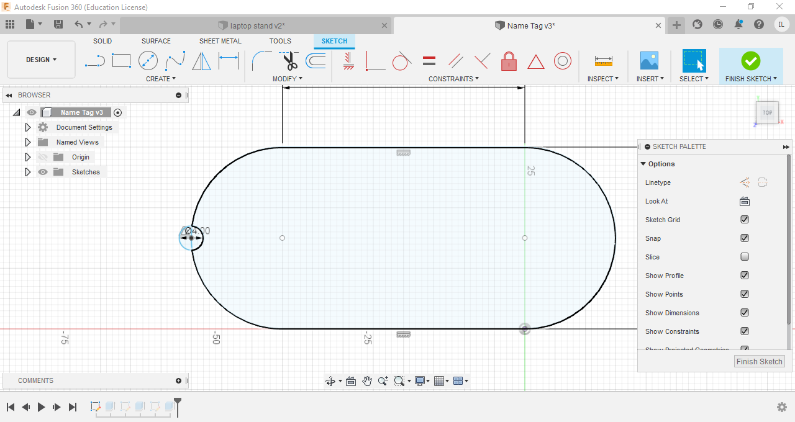
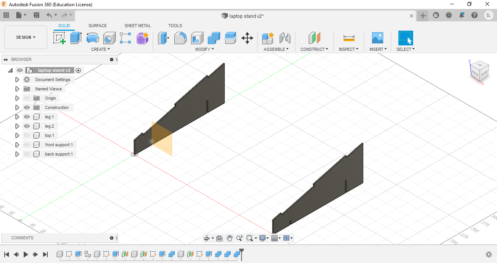

3D Modelling
In here i will be talking about how i used Fusion360 to create my projects
Excercise 1-Name Tag
These excercies were provided to us, for us to practice using fusion360 The first excercise was a name tag
I first drew out and extruded the base of the name tag


Next, the rims of the nametag were drawn using the offset function, before i extruded it

The text was then added and extruded

Final Product
Excercise 2-Lego Brick
The base of the lego brick was first sketched and then extruded

I then sketched the dots on the brick and extruded it, before using the patern fuction to create 7 more identical dots on the lego brick
The brick is then hollowed using the shell function, and 2 more collums were created at the bottom the the brick

Finally to finish up the lego brick, the edges of the top dots were filleted
Final Product
There is a full tutorial on youtube showing how to create the lego brick step by step. To watch the video click [here]
Excercise 3-Extrudes and Plains
The base of the object was first sketched out and extruded


Another sketch was then drawn on the first level of boxes, extruded and the process was repeated til the last level


The object is then hollowed with the shell function, finalising the product
Final Product
Horse chess piece
I first drew a sketch for the base of my horse chess piece, before revolving it.


Next, i inserted a canvas, traced the actual horse and extruded it

Finally to get my final product, i combined the base and the horse head
Final Product
Laptop Stand
I first drew the stand for my laptop stand, extruded it and the mirrored it

I drew a sketch for the top of the laptop stand and extruded it, keeping in mind to make holes for the flanges of the legs


The front support and back support is then drawn with added slits to add support to the laptop stand


I then used to combine function in fusion360 to make slits into the legs to fit in the supports and hence creating the final product